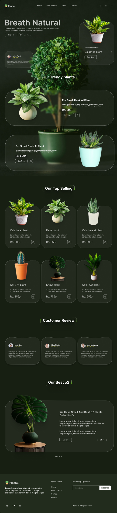

Atmospheric hero
The dark leafy background and “Breath Natural” headline establish the brand mood immediately.
A premium plant shopping experience that uses a dark botanical atmosphere, glass panels, and product-focused sections to make indoor plants feel aspirational.

Planto is built as a rich ecommerce landing page for plant lovers. The page opens with a cinematic plant hero, then guides users through trendy plants, top-selling products, customer reviews, and a featured oxygen plant collection.
The design leans into deep greens, translucent cards, soft borders, and large plant imagery to create a calm premium mood while keeping buying actions visible.
Design approach
The dark leafy background and “Breath Natural” headline establish the brand mood immediately.
Transparent product cards keep the page layered and premium while still showing names, prices, and actions clearly.
Customer reviews and curated collections create reassurance before the footer subscription area.
Large plant photography anchors the first viewport, supported by navigation, shopping icons, and a featured plant card.
Product cards use consistent spacing, rounded glass surfaces, visible pricing, and compact cart actions.
The lower sections add social proof and a more editorial collection story before the footer.
Outcome
Planto shows Abhishek’s ability to create a full visual system for a product-focused website: brand atmosphere, product hierarchy, cards, reviews, and conversion points all working together in one long-form landing page.
Back to Projects